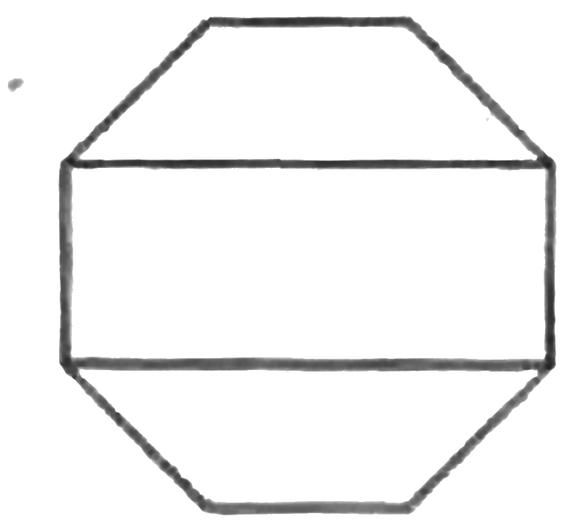

a מייצג את מספר הגורמים הראשוניים שמופיעים רק פעם אחת במספרים שבקבוצה הראשונה.
b מייצג את מספר הגורמים הראשוניים שמופיעים פעמיים במספרים שבקבוצה השנייה.
a − b = ?
הצגת הפתרון
התשובה הסופית2תשובה (2)2
דרך הפתרון והסבר
קבוצה 1: 78 = 2·3·13, 87 = 3·29, 95 = 5·19 ⇒ פעם אחת: 2, 13, 29, 5, 19 ⇒ a = 5. קבוצה 2: 66 = 2·3·11, 105 = 3·5·7, 130 = 2·5·13 ⇒ פעמיים: 2, 3, 5 ⇒ b = 3. a − b = 2.
מוקשים נפוצים
לפרק כל מספר לגורמים ראשוניים.
נבדקהפתרון תואם את מפתח התשובות של הספר.
שאלה 3
יובל יצא לריצת הר ועמק שאורכה 12 שעות. אחת ל־12 דקות הוא לוגם מבקבוק המים שלו, אחת לרבע שעה הוא חולף על פני רץ אחר ואחת ל־45 דקות הוא עובר בתחנת רענון.
כמה פעמים במהלך הריצה חלף יובל על פני רץ אחר בתחנת רענון תוך כדי לגימה מבקבוקו?
הצגת הפתרון
התשובה הסופית4תשובה (4)4
דרך הפתרון והסבר
LCM(12, 15, 45) = 180 דקות = 3 שעות ⇒ ב־12 שעות: 4 פעמים.
מוקשים נפוצים
LCM ולא GCD.
נבדקהפתרון תואם את מפתח התשובות של הספר.
שאלה 4
נתון: a + b מתחלק ב־3 ללא שארית. c − b מתחלק ב־3 ללא שארית.
איזה מהביטויים הבאים בהכרח מתחלק ב־3 ללא שארית?
הצגת הפתרון
התשובה הסופית4תשובה (4)כל התשובות נכונות
דרך הפתרון והסבר
a ≡ −b, c ≡ b (מודולו 3). (1) a + c ≡ 0. (2) a + 2b − c ≡ 0. (3) = (a + b)(c − b) ≡ 0. כולן נכונות.
מוקשים נפוצים
לעבוד מודולו 3.
נבדקהפתרון תואם את מפתח התשובות של הספר.
שאלה 5

בסרטוט שלפניכם מתומן משוכלל שצלעו 2 ס"מ.
על פי נתונים אלו ונתוני הסרטוט, מה גודלו של השטח הכהה (בסמ"ר)?
הצגת הפתרון
התשובה הסופית2תשובה (2)4(√2 + 1)
דרך הפתרון והסבר
המלבן הכהה בין שתי הצלעות האנכיות: רוחב 2 + 2·(2√2) = 2 + 2√2, גובה 2 ⇒ 4 + 4√2 = 4(√2 + 1).
מוקשים נפוצים
לזכור את חלקי הריבועים מעבר לצלע.
נבדקהפתרון תואם את מפתח התשובות של הספר.
שאלה 6
בכיתה 10 בנים ו־10 בנות. המורה מעוניינת, לצורך תמונת סוף השנה, לסדר את כל הבנים בשורה מימינה ואת כל הבנות בשורה משמאלה.
בכמה דרכים יש למורה לסדר את התלמידים לתמונה הכיתתית?
הצגת הפתרון
התשובה הסופית3תשובה (3)(10!)²
דרך הפתרון והסבר
הבנים בשורה: 10!, הבנות: 10! ⇒ (10!)².
מוקשים נפוצים
2 קבוצות × סידור פנימי בכל אחת.
נבדקהפתרון תואם את מפתח התשובות של הספר.
שאלה 7
A, B ו־C הן אותיות המייצגות ספרות שונות בין 0 ל־9. נתון: AA + CB = CBA
A = ?
הצגת הפתרון
התשובה הסופית4תשובה (4)9
דרך הפתרון והסבר
11A + 10C + B = 100C + 10B + A ⇒ 10A = 90C + 9B. C = 1 (תוצאה תלת־ספרתית) ⇒ 10A = 90 + 9B ⇒ A = 9, B = 0: 99 + 10 = 109.
מוקשים נפוצים
C = 1 כי התוצאה תלת־ספרתית.
נבדקהפתרון תואם את מפתח התשובות של הספר.
שאלה 8
בסרטוט שלפניכם מחומש ABCDE. על קודקודי המחומש הניחו את מרכזיהם של חמישה מעגלים חופפים שרדיוסם r.
על פי נתונים אלו ונתוני הסרטוט, מה סכום השטחים הכהים?
הצגת הפתרון
התשובה הסופית2תשובה (2)3.5πr²
דרך הפתרון והסבר
סכום זוויות המחומש 540° ⇒ החלקים בתוך המחומש = 1.5 מעגלים. הכהה (בחוץ) = 5πr² − 1.5πr² = 3.5πr².
מוקשים נפוצים
סכום הזוויות במחומש הוא 540°.
נבדקהפתרון תואם את מפתח התשובות של הספר.
שאלה 9
נתון: A = |x + y||x − y| , x ≠ y
מה מהבאים נכון בהכרח?
הצגת הפתרון
התשובה הסופית4תשובה (4)אף אחת מהתשובות אינה נכונה בהכרח
דרך הפתרון והסבר
A יכול להיות 0 (x = −y), קטן מ־1, גדול מ־1 או שלם – אין טענה שמתקיימת תמיד.
מוקשים נפוצים
x = −y נותן A = 0.
נבדקהפתרון תואם את מפתח התשובות של הספר.
שאלה 10לבדיקה
בכד 80 כדורים. כל אחד מהכדורים צבוע בלפחות אחד מהצבעים הבאים – כחול, ירוק ואדום. ידוע כי 40% מהכדורים צבועים רק בכחול, וכי 50% מהכדורים הנותרים אינם צבועים בירוק. אם ידוע כי מספר הכדורים הצבועים לא רק באדום גדול ממספר הכדורים הצבועים רק בכחול, כמה כדורים, לכל היותר, צבועים רק בירוק?
הצגת הפתרון
התשובה הסופית1תשובה (1)15
דרך הפתרון והסבר
32 רק בכחול. מתוך 48 הנותרים: 24 לא ירוקים ו־24 ירוקים.
מוקשים נפוצים
הנוסח כנראה שגוי – לבדוק בספר.
דורש בדיקההמקור לא חד או סותר את המפתח. התשובה המוצגת היא לפי מפתח הספר.
לפי הנוסח שהועתק התנאי האחרון לא מגביל מספיק כדי להגיע ל־15. כנראה חלק מהנוסח נקרא לא נכון. התשובה לפי המפתח: 15.